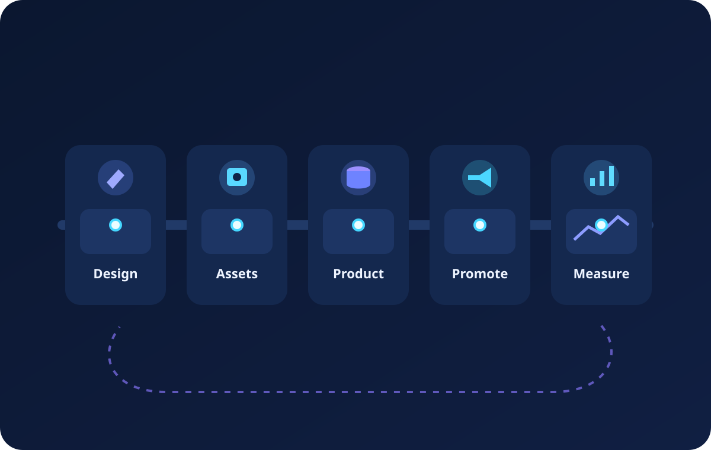

Disconnected tools
Creative tools, product systems, marketplaces, and social channels all hold different parts of the process.
Today’s product and content operations are fragmented: designs live in one place, assets in another, product data somewhere else, and publishing plus promotion depend on manual handoffs. Content Process brings these moving parts together into configurable workflows that reflect the way real teams actually work.
Teams are expected to move from initial design concepts to product-ready assets, enrich listings with structured data, publish across multiple channels, and support launches with social promotion and performance feedback. The challenge is not just creating content — it is coordinating many systems, approvals, formats, and dependencies.
Creative tools, product systems, marketplaces, and social channels all hold different parts of the process.
Teams repeatedly copy information, upload assets, and manage exceptions across each production step.
Every business has its own approval paths, asset sources, and publishing rules — which rigid software often ignores.

Content Process is designed for businesses that need more than simple task lists. It models the actual flow from templates and source assets through content creation, product enrichment, publication, distribution, and iteration. Instead of adapting your organization to fixed software assumptions, you adapt the process to your needs.
Build workflows around your own inputs, outputs, approvals, and dependencies.
Coordinate creative production, channel preparation, publishing logic, and promotional follow-up in one place.
Combine design tools, listing channels, and downstream promotion workflows without losing process context.
Content Process can support AI-assisted steps such as content suggestions, enrichment support, structured guidance, or optimization ideas. But the platform is not built around forced AI subscriptions. The foundation is your process, your data, and your operational decisions.
Our goal is to make complex content and product operations easier to understand, model, and scale. Whether the process starts with a design concept, local assets, structured product data, or publishing requirements, Content Process keeps the chain visible and actionable.
How the website and integrations handle personal data.
General terms for using the website and software information.
Support and communication details.
How users can request deletion of integration-related data.
How Content Process uses the official Pinterest API and user authorization.